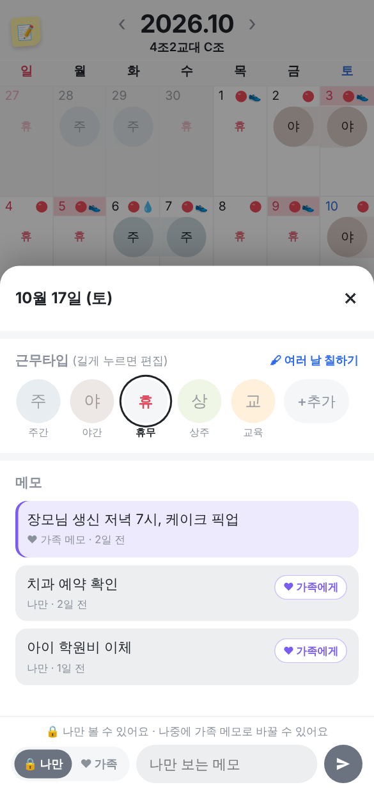
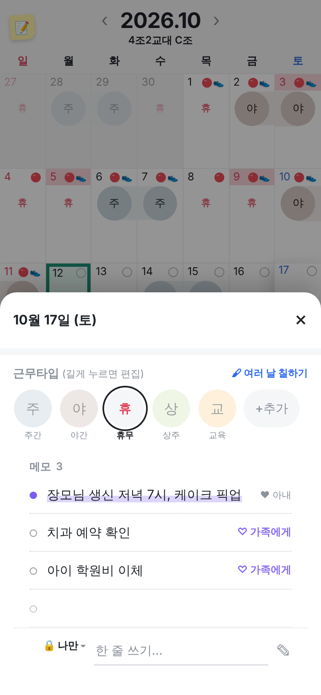
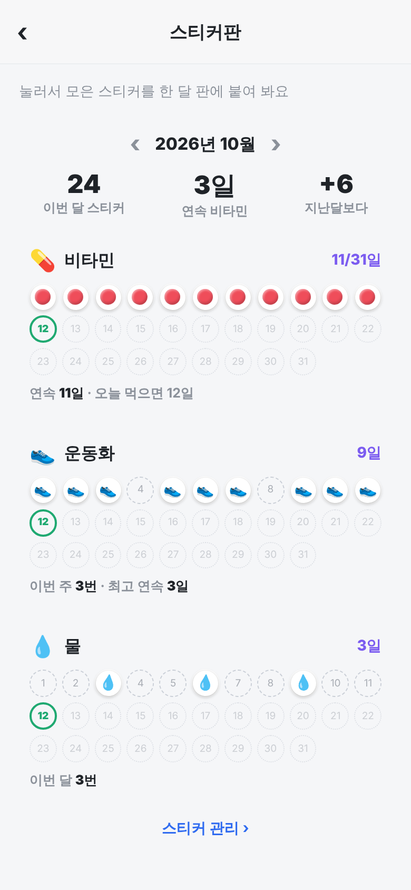

스티커판 · 다이어리 느낌 메모
실제 앱 화면 위에 그린 시안이에요. 가운데는 날짜 아래 메모 부분, 오른쪽은 새로 생기는 스티커판이에요.
메모 · 지금회색 상자 + 버튼 + 채팅 입력창
칸이 많아서 조금 무거워요
메모 · 다이어리 느낌상자 없이 줄 노트처럼, 가족 메모는 형광펜
입력도 줄 한 칸 "한 줄 쓰기…"
스티커판스티커 종류마다 한 달 판 · 눌러서 채우는 재미
위에 이번 달 요약